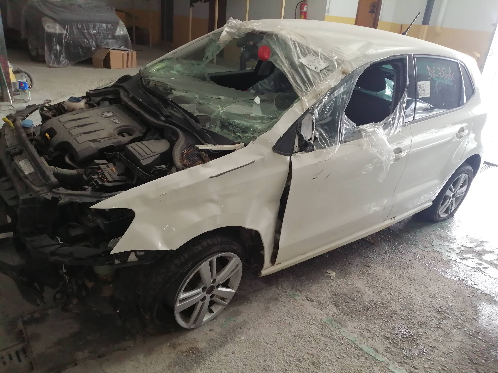
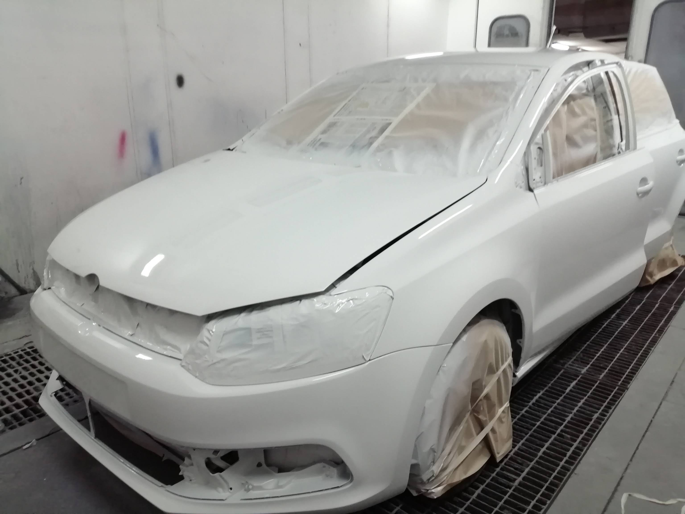
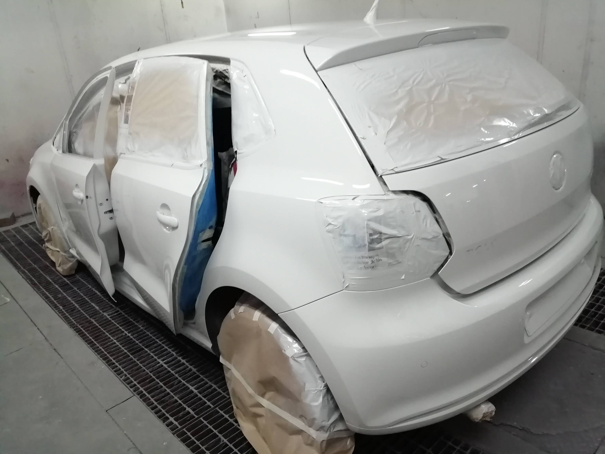
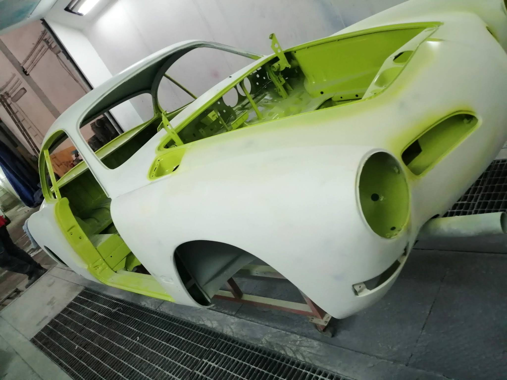
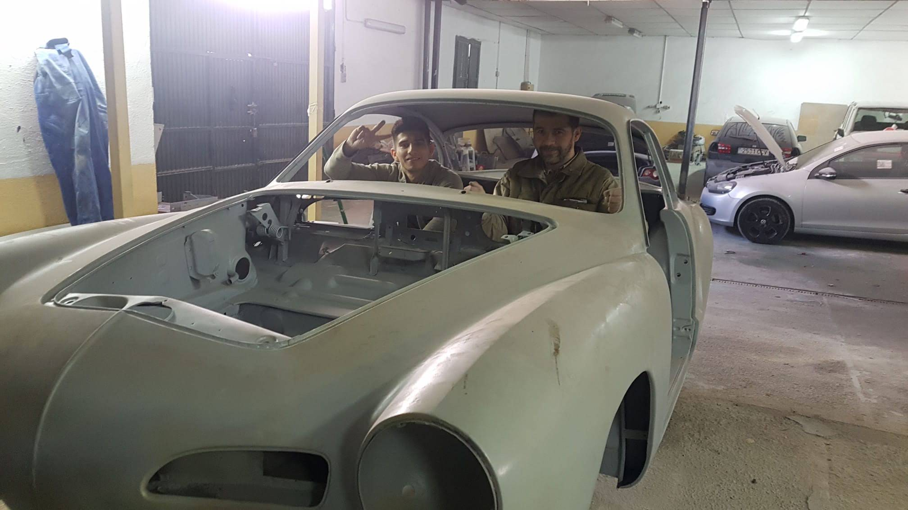
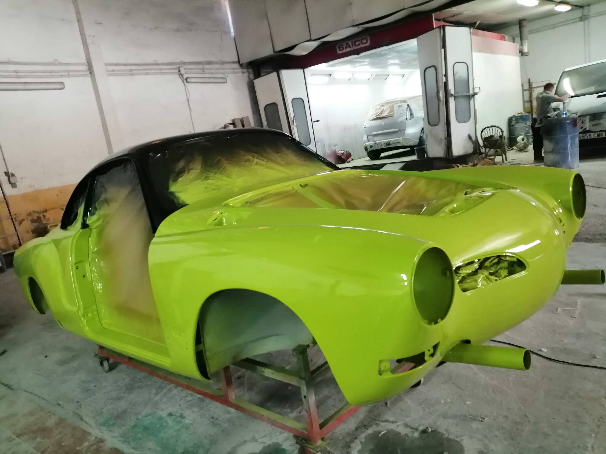
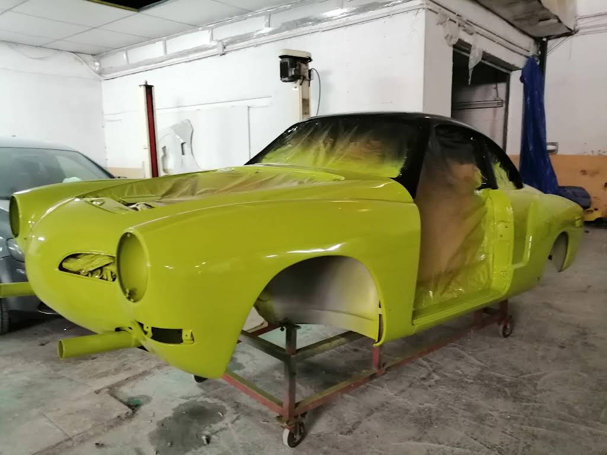

El arte de la restauración
No tapamos golpes, restauramos vehículos a su estado de fábrica utilizando pintura de primera calidad y las técnicas más avanzadas del sector.
Nuestros Milagros (Antes y Después)
ANTES

DESPUÉS


Restauración frontal severa
Reconstrucción de piezas estructurales, sustitución de paragolpes y encuadre perfecto.
ANTES


DESPUÉS


Restauración de pintura integral
Tratamiento de arañazos múltiples e igualación de color en varias piezas de la carrocería.
Instalaciones y Proceso
Un vistazo a nuestras cabinas de pintura y zona de preparación.
Foto Instalación 1
Foto Instalación 2
Trabajo en cabina
Horno de secado
¿Tu coche necesita un repaso?
Pásate por el taller o envíanos unas fotos por WhatsApp y te daremos una estimación sin ningún compromiso.